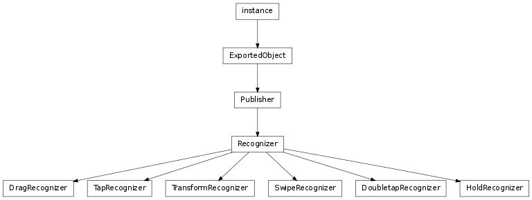
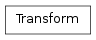

Gesture Support¶
The namespace libavg.gesture exposes a group of configurable gesture recognizers.


- class libavg.gesture.DoubletapRecognizer(node[, maxTime=MAX_DOUBLETAP_TIME, maxDist=MAX_TAP_DIST, initialEvent=None, possibleHandler=None, failHandler=None, detectedHandler=None])¶
Bases: libavg.gesture.Recognizer
A DoubletapRecognizer detects doubletaps: Two short touches in quick succession without a large change of the cursor position.
Parameters: - maxTime – The maximum time that each phase of the tap may take.
- maxDist – The maximum distance the contact may move in millimeters.
- class libavg.gesture.DragRecognizer(eventNode[, coordSysNode=None, initialEvent=None, direction=ANY_DIRECTION, directionTolerance=DIRECTION_TOLERANCE, friction=-1, minDragDist=None, possibleHandler=None, failHandler=None, detectedHandler=None, moveHandler=None, upHandler=None, endHandler=None])¶
Bases: libavg.gesture.Recognizer
A DragRecognizer attaches itself to a node’s cursor events and delivers higher-level callbacks that can be used to implement dragging or drag-like functionality.
DragRecognizer supports inertia after the node is released.
Parameters: - coordSysNode (avg.Node) – Used to determine the coordinate system for the offsets returned by the callbacks. If coordSysNode is not given, eventNode is used as default. The DragRecognizer never modifies any nodes itself. coordSysNode can be used to separate the node that is the ‘handle’ for the events from the node that is being moved - for instance, to allow moving a window by dragging the title bar.
- direction – Can be used to constrain the recognizer to VERTICAL or HORIZONTAL drags only. If one of these constants is passed as direction, the recognizer invokes onPossible() when the down event arrives, then determines whether the drag is a predominantly horizontal or vertical drag and invokes either onDetected() or onFail() depending on the result.
- directionTolerance (float) – A tolerance angle in radians for the detection of horizontal and vertical drags.
- eventNode (avg.Node) – The node to attach to. The DragRecognizer registers an event handler to react to any contacts for this node.
- friction (float) – If set, this parameter enables inertia processing. It describes how quickly the drag comes to a stop after the cursor is released.
- minDragDist (float) – Minimum distance in mm that the cursor must move for the recognizer to switch from POSSIBLE to DETECTED. Default is either 0 (for ANY_DIRECTION recognizers) or MIN_DRAG_DIST (for constrained recognizers).
- moveHandler – A shortcut for Recognizer.subscribe(Recognizer.MOTION, moveHandler).
- upHandler – A shortcut for Recognizer.subscribe(Recognizer.UP, upHandler).
Messages:
To get these messages, call Publisher.subscribe().
- Recognizer.MOTION(offset)¶
Emitted when the drag should cause a position change. This usually happens in response to a CURSORMOTION event, but may also happen because of inertia.
Parameters: offset (avg.Point2D) – The current offset from the start of the drag in coordinates relative to the coordSysNode‘s parent.
- Recognizer.UP(offset)¶
Emitted when the cursor is released. If inertia is enabled, there may be move events after the up event.
Parameters: offset (avg.Point2D) – The current offset from the start of the drag in coordinates relative to the coordSysNode‘s parent.
- abort()¶
Aborts the present recognized gesture and sliding caused by inertia
- abortInertia()¶
Causes inertia processing to end immediately.
- class libavg.gesture.HoldRecognizer(node[, delay=HOLD_DELAY, maxDist=MAX_TAP_DIST, initialEvent=None, possibleHandler=None, failHandler=None, detectedHandler=None, stopHandler=None])¶
Bases: libavg.gesture.Recognizer
A HoldRecognizer detects if a touch is held for a certain amount of time. Holds are continuous events: the stopHandler() is called when the contact up event arrives.
Parameters: - delay – The amount of time that has to pass before the hold is recognized.
- maxDist – The maximum distance the contact may move in millimeters.
- class libavg.gesture.Recognizer(node, isContinuous, maxContacts, initialEvent[, possibleHandler=None, failHandler=None, detectedHandler=None, endHandler=None])¶
Bases: libavg.avg.Publisher
Base class for gesture recognizers that attach to a node’s cursor events and emit higher-level events. Gesture recognizers have a standard set of states and callbacks, but derived classes may add their own callbacks and do not need to invoke all base class callbacks. The possible states vary depending on the value of isContinuous:

A usage example for the recognizers can be found under src/samples/gestures.py. Many of the recognizers have default timeouts and distance limits which can be changed by modifying avgrc. The sample file under src/avgrc contains explanations.
Parameters: - node (Node) – Node to attach to.
- isContinuous (bool) – True if the gesture stays active after it has been detected.
- maxContacts – The maximum number of contacts that the recognizer should handle. None if there is no maximum.
- initialEvent – A cursordown event to pass to the recognizer immediately.
- possibleHandler – A shortcut for Recognizer.subscribe(Recognizer.POSSIBLE, possibleHandler).
- failHandler – A shortcut for Recognizer.subscribe(Recognizer.FAIL, failHandler).
- detectedHandler – A shortcut for Recognizer.subscribe(Recognizer.DETECTED, detectedHandler).
- endHandler – A shortcut for Recognizer.subscribe(Recognizer.END, endHandler).
Messages:
Gesture recognizers emit messages whenever they change state - see the state diagrams above. The messages have a parameter of type CursorEvent.
To get these messages, call Publisher.subscribe().
- POSSIBLE()¶
Emit when gesture recognition begins - usually after a cursordown event. Some continuous gestures (such as unconstrained drags) never emit POSSIBLE() but emit DETECTED() immediately.
- FAILED()¶
Emitted when gesture recognition is rejected. For instance, in the case of a DoubleTapRecognizer, a FAILED() message is emitted if the touch stays on the surface for too long.
- DETECTED()¶
Emitted when the gesture is recognized. For discrete gestures, this signifies the end of gesture processing.
- contacts¶
List of all contacts detected by the Recognizer.
- abort()¶
Aborts the present recognized gesture.
- enable(isEnabled)¶
Enables or disables the Recognizer.
- getState() → String¶
Returns the state (“IDLE”, “POSSIBLE” or “RUNNING”) of the recognizer.
- class libavg.gesture.SwipeRecognizer(node, direction[, numContacts=1, directionTolerance=SWIPE_DIRECTION_TOLERANCE, minDist=MIN_SWIPE_DIST, maxContactDist=MAX_SWIPE_CONTACT_DIST, initialEvent=None, possibleHandler=None, failHandler=None, detectedHandler=None])¶
Bases: libavg.gesture.Recognizer
A SwipeRecognizer detects movement of one or more contacts in a specified direction and with a minimal distance. Whether the gesture is recognized is determined when an up event occurs.
Parameters: - direction – One of SwipeRecognizer.UP, DOWN, LEFT or RIGHT.
- numContacts – The minimum number of contacts for the swipe.
- directionTolerance – Maximum deviation from the ideal direction that the touch(es) may have in radians.
- minDist – Minimum distance between start position and end position of each contact in millimeters.
- maxInterContactDist – Maximum distance between the start positions of the different contacts.
- class libavg.gesture.TapRecognizer(node[, maxTime=MAX_TAP_TIME, maxDist=MAX_TAP_DIST, initialEvent=None, possibleHandler=None, failHandler=None, detectedHandler=None])¶
Bases: libavg.gesture.Recognizer
A TapRecognizer detects short touches without a large change of the cursor position.
Parameters: - maxTime – The maximum time that the tap may take in milliseconds.
- maxDist – The maximum distance the contact may move in millimeters.
- class libavg.gesture.Transform(trans[, rot=0, scale=1, pivot=(0, 0)])¶
Encapsulates a coordinate transformation and can be used to change the position, rotation and scale of a node.
- pivot¶
The point around which rot and scale are applied.
- rot¶
Rotation in radians.
- scale¶
Multiplies the size of the node.
- trans¶
The translation.
- moveNode(node)¶
Changes a node‘s pos, angle and size by applying the transform.
- class libavg.gesture.TransformRecognizer(eventNode[, coordSysNode=None, initialEvent=None, friction=-1, detectedHandler=None, moveHandler=None, upHandler=None, endHandler=None])¶
Bases: libavg.gesture.Recognizer
A TransformRecognizer is used to support drag/zoom/rotate functionality. From any number of touches on a node, it calculates an aggregate transform that can be used to change the position, size and angle of a node. The class supports intertia after the node is released.
Parameters: - eventNode (avg.Node) – The node to attach to. The TransformRecognizer registers an event handler to react to any contacts for this node.
- coordSysNode (avg.Node) – Used to determine the coordinate system for the transforms returned by the callbacks. If coordSysNode is not given, eventNode is used as default. The TransformRecognizer never modifies any nodes itself. coordSysNode can be used to separate the node that is the ‘handle’ for the events from the node that is being moved - for instance, to allow moving and rotating a window by dragging the title bar.
- friction (float) – If set, this parameter enables inertia processing. It describes how quickly the transform comes to a stop after the cursor is released.
- moveHandler – A shortcut for Recognizer.subscribe(Recognizer.MOTION, moveHandler).
- upHandler – A shortcut for Recognizer.subscribe(Recognizer.UP, upHandler).
Messages:
To get these messages, call Publisher.subscribe().
- Recognizer.MOTION(transform)¶
Emitted whenever the transform changes. This usually happens in response to one or more CURSORMOTION events, but may also happen because of inertia.
Parameters: transform (Transform) – The change in transformation since the last call of move or up.
- Recognizer.UP(transform)¶
Called when the last touch is released. If inertia is enabled, there may be move events after the up event.
Parameters: transform (Transform) – The change in transformation since the last call of move.
- abort()¶
Aborts the present recognized gesture and sliding caused by inertia.